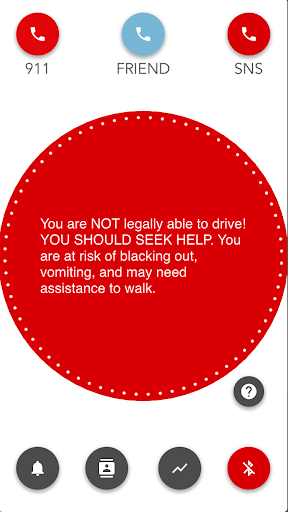
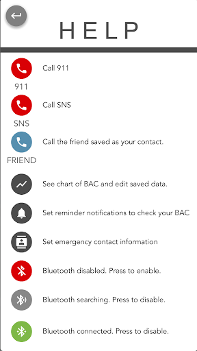

I worked on this project in a team of four as part of a Human-Computer Interaction course. My team wanted to design a system to encourage college students to engage in safer drinking behavior. We followed a strict cycle of user researching, brainstorming, prototyping, testing, and iterating to reach our final deisgns. After studying potential users, we realized that many students binge drink because they don't have an accurate way of keeping track of the alcohol they consumed and don't have a discrete way to check their intoxication level throughout the night. To address this, we designed a breathalyzer inspired by a vape that would connect to a mobile app via bluetooth to show students their intoxication level. Here are some screens from our final prototype:
Since the vape-style breathalyzer provided a discrete way for students to check their or a friend's blood-alcohol content (BAC), the next big design challenge was making the app as easy as possible for intoxicated users to navigate. We kept the interface completely flat, with all functionality at most one touch away. We also chose to color-code the danger level of the user's BAC so the risk could be assessed even if the user was dangerously intoxicated. The emergency contacts are also color coded, with campus security and 911 in red and a preset emergency contact in blue. Here are a few other screens from our prototype:
We were restricted to using specific prototyping tools for this project, so I didn't get much say over the look/feel of the design and the focus was definitely on the user flow. If I were to revisit this project, I'd like to clean up the interface to make the screen less cluttered without sacrificing the app's usability for impaired users.